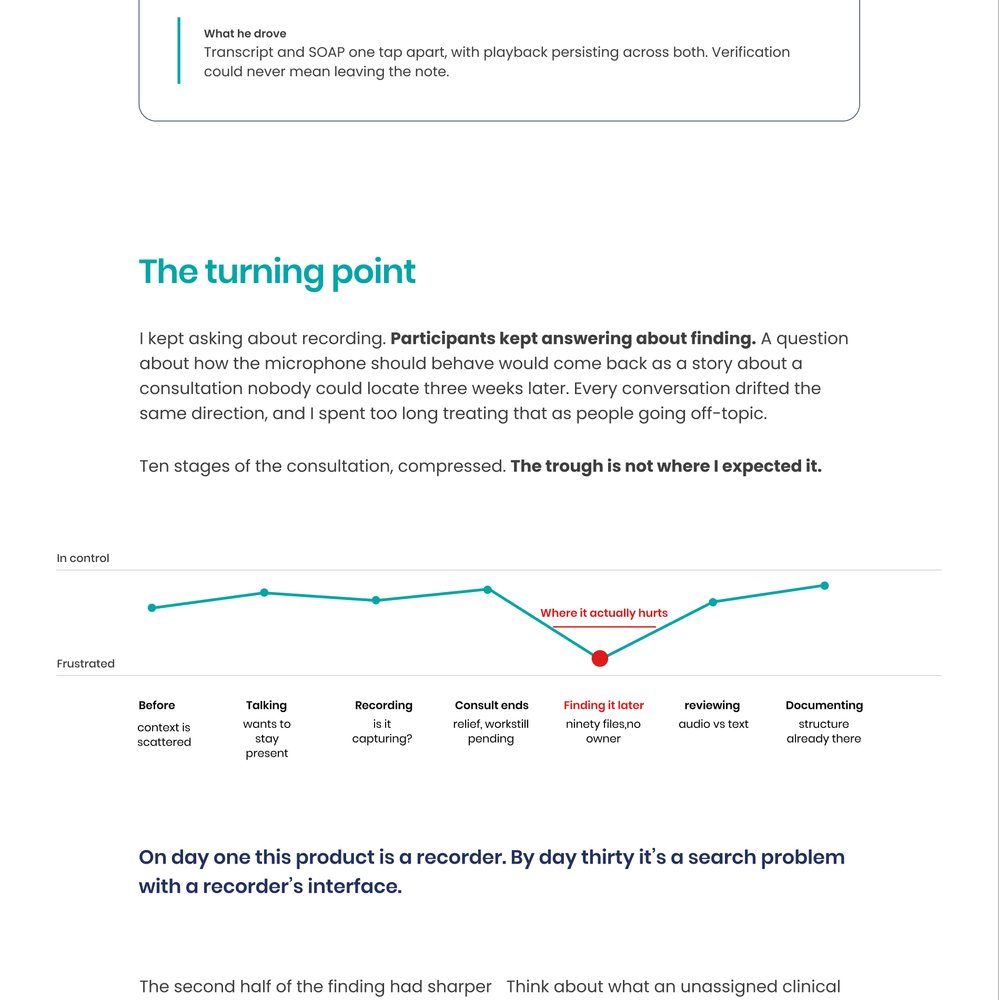
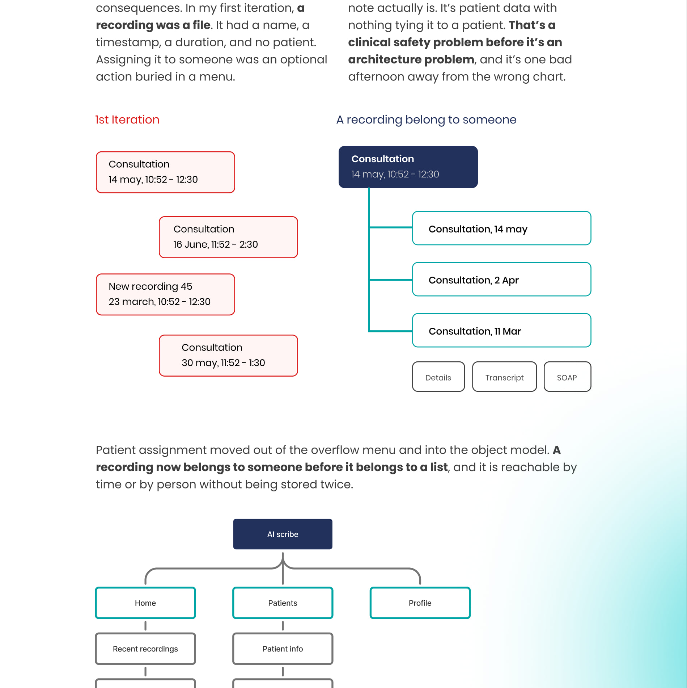
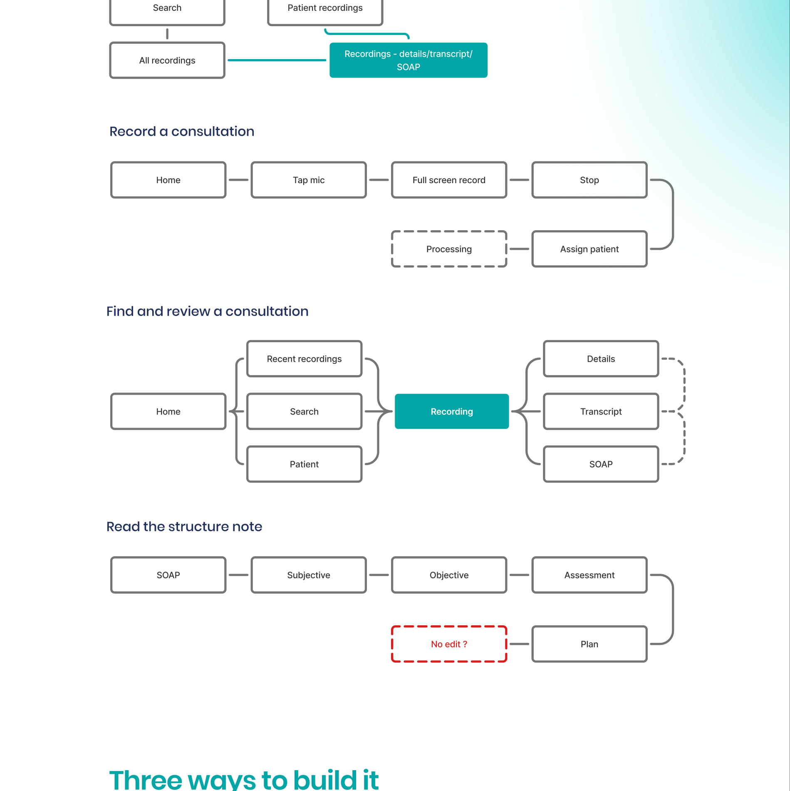
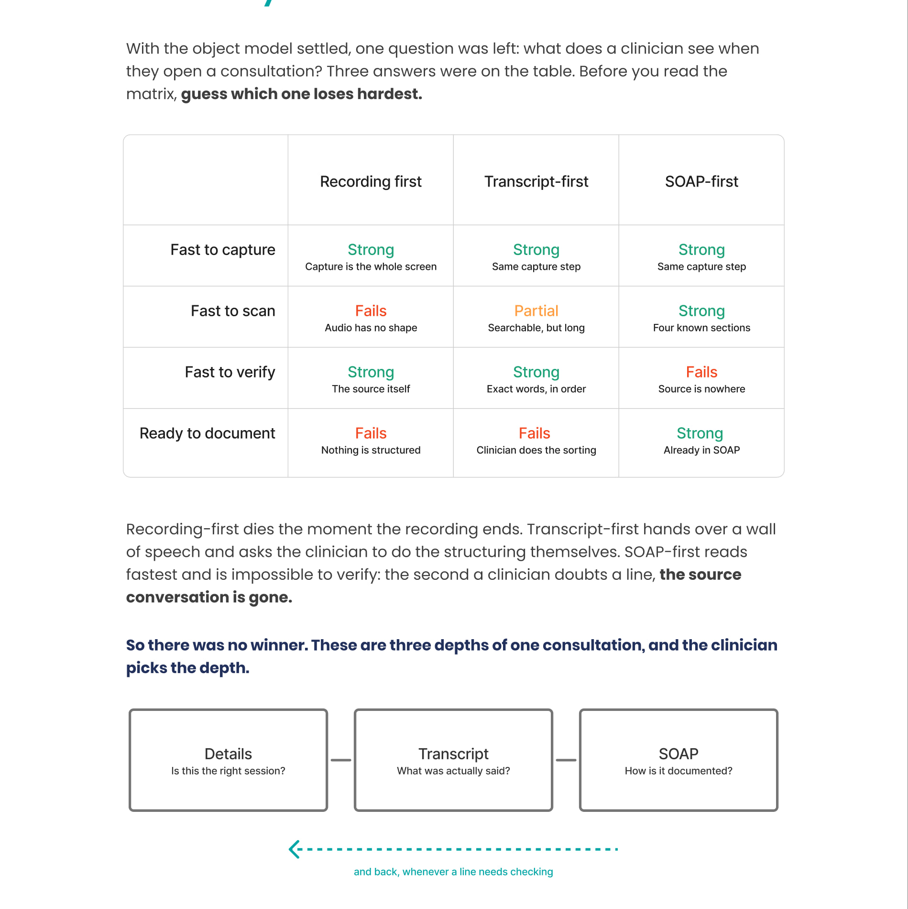
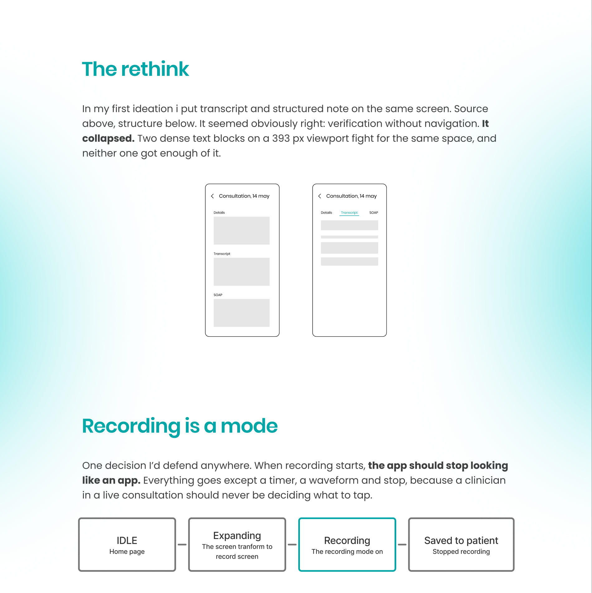
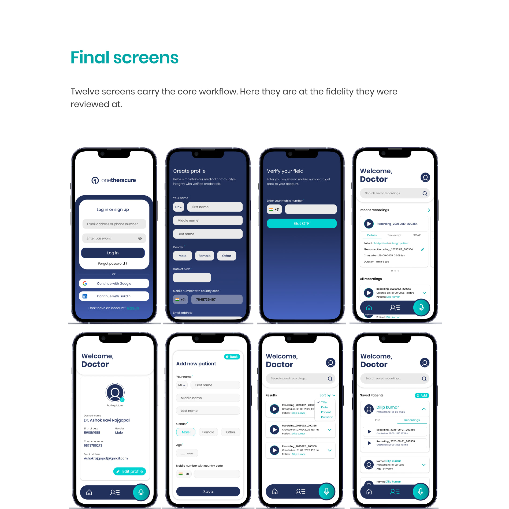
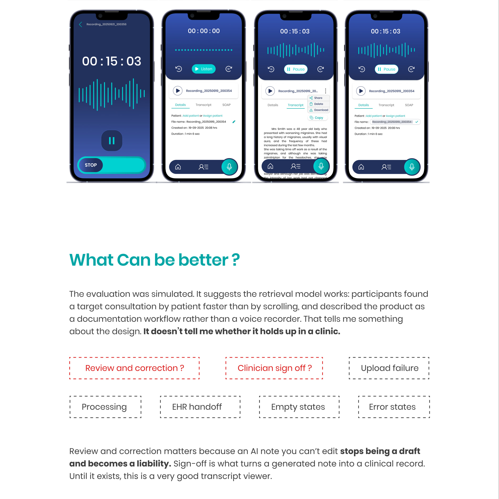
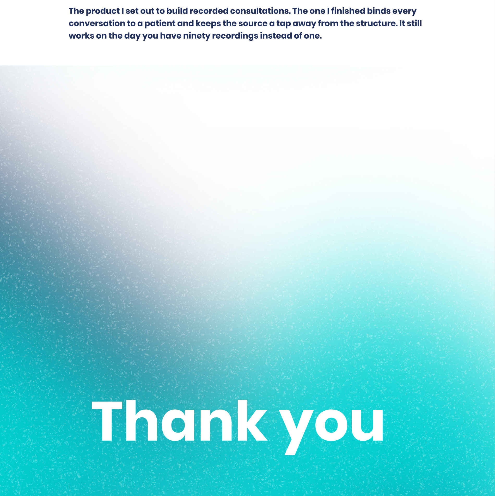

Case study · 01
AI Clinical Scribe
A mobile clinical-documentation workflow that connects every recording to its patient, then turns a consultation into a transcript and structured SOAP draft.
Read the project overview
Context
Clinicians often reconstruct notes after a patient leaves. The concept uses the phone already in a clinician’s pocket to capture a consultation and prepare a structured draft.
The real problem
Recording and transcription alone do not solve patient ownership, trust, correction, retrieval, or the handoff into a useful clinical workflow.
Research synthesis
A constructed 12-profile sample and modeled exercises surfaced the value of section-based reading, patient-linked organization, and separate audio and text recall paths.
The turning point
The recorder was reframed as a search, retrieval, and clinical-safety problem: each recording must belong to a patient and preserve connected layers of detail.
Interaction rethink
Details, Transcript, and SOAP become separate tabs on a narrow viewport, while recording becomes a focused mode with only the controls needed in the moment.
Limits
The evaluation was simulated, not a clinical deployment. Correction, clinician sign-off, processing states, EHR handoff, and error states remain open work.










Prefer the file? Open the case study as a PDF.